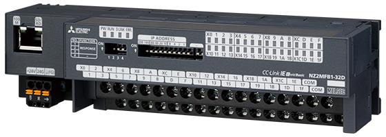

Network-related products |
Programmable Controllers MELSEC
CC-Link IE Field Basic Line Up

Block Type Remote Modules
CC-Link IE Field Network Basic Block type remote module
- CC-Link IE Field Network Basic remote stations. These modules are useful when installation positions close to I/O devices are required
- Supports CC-Link IE Field Network Basic diagnostic function. Network error and I/O module fault can be checked using the engineering software. Enables CC-Link parameters to be set with simple switch operations
Input modules
Spring-clamp terminal block
| Model | Input type DC input |
Input points | Rated input voltage/current | Wiring type |
|---|---|---|---|---|
| NZ2MF2S1-32D | Positive common, Negative common | 32 points | 24 V DC (6 mA) | 1-wire |
| Model | Input type | Input points | Rated input voltage, frequency | Rated input current | Wiring type |
|---|---|---|---|---|---|
| NZ2MF2S2-16A | AC input | 16 points | 100…120 V AC, 50/60 Hz | 8.2 mA (100 V AC, 60 Hz) 6.8 mA (100 V AC, 50 Hz) |
2-wire |
Screw terminal block

| Model | Input type DC input |
Input points | Rated input voltage/current | Wiring type |
|---|---|---|---|---|
| NZ2MFB1-32D | Positive common, Negative common | 32 points | 24 V DC (6 mA) | 1-wire |
| Model | Input type | Input points | Rated input voltage, frequency | Rated input current | Wiring type |
|---|---|---|---|---|---|
| NZ2MFB2-16A | AC input | 16 points | 100…120 V AC | 8.2 mA (100 V AC, 60 Hz) 6.8 mA (100 V AC, 50 Hz) |
2-wire |
Output modules
Spring-clamp terminal block
NZ2MF2S1-32T
| Model | Output type Transistor output |
Output points | Rated load voltage/Max. load current | Wiring type |
|---|---|---|---|---|
| NZ2MF2S1-32T | Sink | 32 points | 12/24 V DC (0.5 A/point, 5 A/common) | 1-wire |
| NZ2MF2S1-32TE1 | Source | 32 points | 12/24 V DC (0.1 A/point, 2 A/common) | 1-wire |
| Model | Output type | Output points | Rated switching voltage/current | Wiring type |
|---|---|---|---|---|
| NZ2MF2S2-16R | Contact output | 16 points | 24 V DC (2 A), 240 V AC (2 A) | 2-wire |
Screw terminal block
NZ2MFB1-32T
| Model | Output type Transistor output |
Output points | Rated load voltage/Max. load current | Wiring type |
|---|---|---|---|---|
| NZ2MFB1-32T | Sink | 32 points | 12/24 V DC (0.5 A/point, 5 A/common) | 1-wire |
| NZ2MFB1-32TE1 | Source | 32 points | 12/24 V DC (0.1 A/point, 2 A/common) | 1-wire |
| Model | Output type | Output points | Rated switching voltage/current | Wiring type |
|---|---|---|---|---|
| NZ2MFB2-16R | Contact output | 16 points | 24 V DC (2 A), 240 V AC (2 A) | 2-wire |
I/O combined modules
Spring-clamp terminal block
NZ2MF2S1-32DT
| Model | Input type DC input |
Input points | Rated input voltage/ current |
Output type Transistor output |
Output points | Rated load voltage/ Max. load current |
Wiring type |
|---|---|---|---|---|---|---|---|
| NZ2MF2S1-32DT | Positive common |
16 points | 24 V DC (6 mA) | Sink | 16 points | 24 V DC (0.5 A/point, 4 A/common) |
1-wire |
| NZ2MF2S1-32DTE1 | Negative common |
16 points | 24 V DC (6 mA) | Source | 16 points | 24 V DC (0.1 A/point, 1.6 A/common) |
1-wire |
Screw terminal block
NZ2MFB1-32DT
| Model | Input type DC input |
Input points | Rated input voltage/ current |
Output type Transistor output |
Output points | Rated load voltage/ Max. load current |
Wiring type |
|---|---|---|---|---|---|---|---|
| NZ2MFB1-32DT | Positive common |
16 points | 24 V DC (6 mA) | Sink | 16 points | 24 V DC (0.5 A/point, 4 A/common) |
1-wire |
| NZ2MFB1-32DTE1 | Negative common |
16 points | 24 V DC (6 mA) | Source | 16 points | 24 V DC (0.1 A/point, 1.6 A/common) |
1-wire |